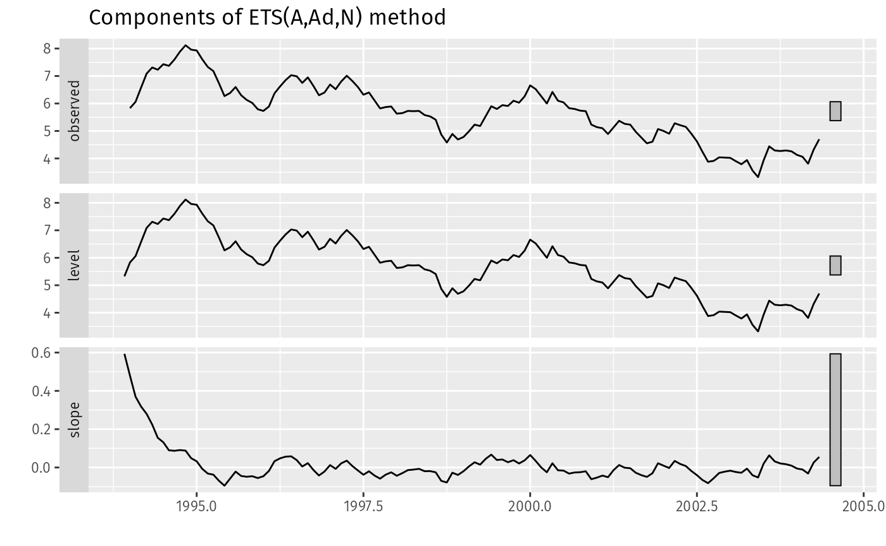
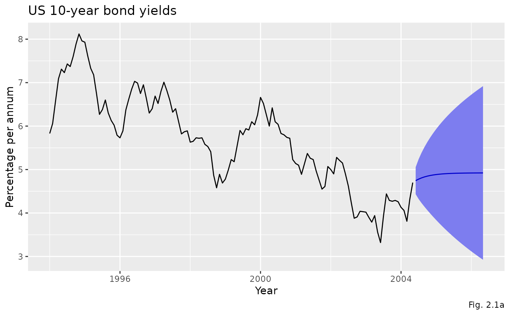
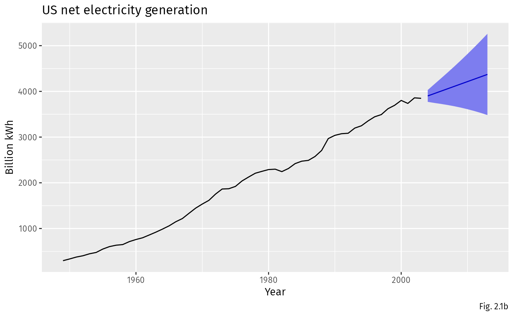
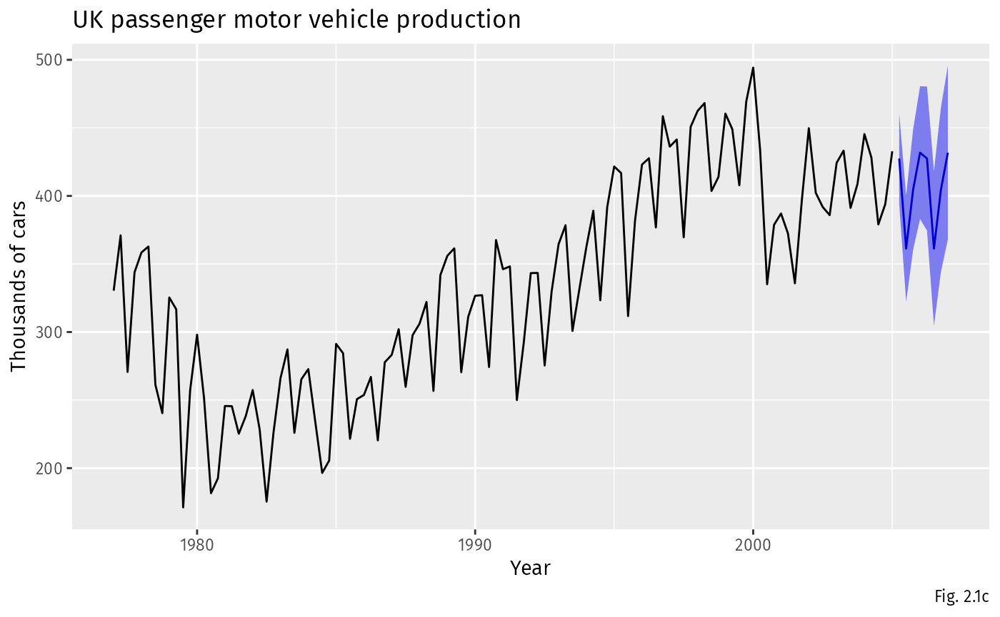
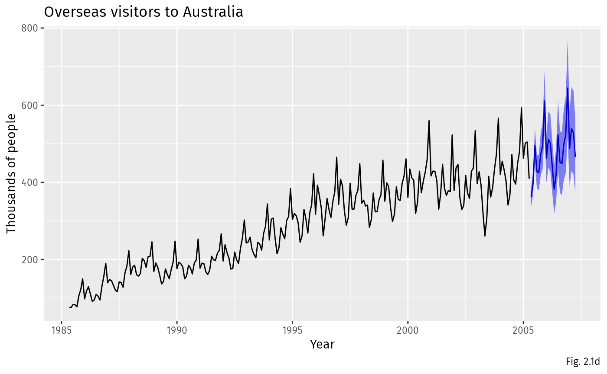

Using expsmooth: worked examples
Justin Carmody, Rob J Hyndman
21 November 2026
Source:vignettes/expsmooth-vignette.Rmd
expsmooth-vignette.RmdIntroduction
This package contains a collection of data sets that are designed to accompany the book Forecasting with Exponential Smoothing: The State Space Approach by Rob J. Hyndman, Anne B. Koehler, J. Keith Ord, and Ralph D. Snyder (Springer, 2008).

When the expsmooth package is loaded, the
forecast package is also loaded, providing the functions to
fit and forecast with exponential smoothing state space models. We also
use ggplot2 and patchwork for the graphs.
This vignette follows the analysis in Section 2.8 of the book, and provides worked solutions to Exercises 2.3 and 2.4. The forecast package has been updated since the book was published, so some of the resulting models and estimates differ from those in the book. Figure numbers are taken from the book.
Data sets
Chapters 1 and 2 use four data sets that are included in the
expsmooth package.
- bonds: 125 monthly US government bond yields (percent per annum) from January 1994 to May 2004.
- usnetelec: 55 observations of annual US net electricity generation (billion kWh) for 1949 through 2003.
- ukcars: 113 quarterly observations of passenger motor vehicle production in the UK (thousands of cars) for the first quarter of 1977 through the first quarter of 2005.
- visitors: 240 monthly observations of the number of short-term overseas visitors to Australia from May 1985 to April 2005.
These time series are shown in Figure 1.1, which is reproduced below.
plot_bonds <- autoplot(bonds) +
labs(
title = "(a) US 10-year bond yields",
x = "Year",
y = "Percentage per annum"
)
plot_usnetelec <- autoplot(usnetelec) +
labs(
title = "(b) US net electricity generation",
x = "Year",
y = "Billion kWh"
)
plot_ukcars <- autoplot(ukcars) +
labs(
title = "(c) UK passenger vehicle production",
x = "Year",
y = "Thousands of cars"
)
plot_visitors <- autoplot(visitors) +
labs(
title = "(d) Overseas visitors to Australia",
x = "Year",
y = "Thousands of people"
)
(plot_bonds | plot_usnetelec) /
(plot_ukcars | plot_visitors)![Four time series plots. (a) US 10-year bond yields, 1994 to 2004, wandering between about 3.5 and 8 percent with a downward drift. (b) US net electricity generation, 1949 to 2003, rising steadily from about 300 to nearly 4000 billion kWh. (c) UK passenger vehicle production, 1977 to 2005, falling to about 200 thousand in the early 1980s then rising to around 400 thousand, with quarterly fluctuations. (d) Overseas visitors to Australia, 1985 to 2005, rising from about 100 to 500 thousand with a strong seasonal pattern that grows with the level.](expsmooth-vignette_files/figure-html/fig-1-1-1.png)
Automatic model selection and forecasting
This part of the vignette follows the automatic forecasting procedure described in Section 2.8 of the book. The book selected ETS(A,Ad,N) for bonds, ETS(M,Md,N) for usnetelec, ETS(A,N,A) for ukcars and ETS(M,A,M) for visitors. The current version of the forecast package selects the same models for bonds, ukcars and visitors, but selects ETS(M,A,N) for usnetelec.
The estimation and model selection are performed by the
ets() function and the forecasting is done by the
forecast() function. These are both part of the
forecast package. A basic introduction to using these
functions is given in Sections 7.6 and
7.7 of Forecasting:
Principles and Practice by Rob J Hyndman and George
Athanasopoulos.
The automatic forecasting process will be carried out for each of the four data sets. The process will be explained for the first data set, and the main results will be reported for the others.
bonds
The ets() function fits all appropriate models
(optimising parameters in each case), and then selects the best model
according to the AICc. The AICc is the default information criterion;
the AIC or BIC can be used instead via the ic argument.
(The book used the AIC; for these four series the AIC and AICc select
the same models.)
fit_bonds <- ets(bonds)
summary(fit_bonds)
#> ETS(A,Ad,N)
#>
#> Call:
#> ets(y = bonds)
#>
#> Smoothing parameters:
#> alpha = 0.9999
#> beta = 0.0954
#> phi = 0.8026
#>
#> Initial states:
#> l = 5.3252
#> b = 0.5934
#>
#> sigma: 0.2428
#>
#> AIC AICc BIC
#> 256.5383 257.2502 273.5082
#>
#> Training set error measures:
#> ME RMSE MAE MPE MAPE MASE
#> Training set -0.01622111 0.2378765 0.1969524 -0.3276314 3.611147 0.2440042
#> ACF1
#> Training set 0.1426552The autoplot() function can then be used to show the
observed series together with the estimated level and slope components
over time.
autoplot(fit_bonds)
The forecast() function is used to produce point
forecasts and prediction intervals. When the summary()
function is called on the forecast object, it prints the model
information along with the point forecasts and prediction intervals.
forecast_bonds <- forecast(fit_bonds, level = 80)
summary(forecast_bonds)
#>
#> Forecast method: ETS(A,Ad,N)
#>
#> Model Information:
#> ETS(A,Ad,N)
#>
#> Call:
#> ets(y = bonds)
#>
#> Smoothing parameters:
#> alpha = 0.9999
#> beta = 0.0954
#> phi = 0.8026
#>
#> Initial states:
#> l = 5.3252
#> b = 0.5934
#>
#> sigma: 0.2428
#>
#> AIC AICc BIC
#> 256.5383 257.2502 273.5082
#>
#> Error measures:
#> ME RMSE MAE MPE MAPE MASE
#> Training set -0.01622111 0.2378765 0.1969524 -0.3276314 3.611147 0.2440042
#> ACF1
#> Training set 0.1426552
#>
#> Forecasts:
#> Point Forecast Lo 80 Hi 80
#> Jun 2004 4.744090 4.432953 5.055227
#> Jul 2004 4.779505 4.322348 5.236661
#> Aug 2004 4.807928 4.229691 5.386165
#> Sep 2004 4.830740 4.144568 5.516913
#> Oct 2004 4.849049 4.063834 5.634264
#> Nov 2004 4.863744 3.986280 5.741207
#> Dec 2004 4.875537 3.911379 5.839695
#> Jan 2005 4.885002 3.838871 5.931134
#> Feb 2005 4.892599 3.768607 6.016591
#> Mar 2005 4.898696 3.700482 6.096910
#> Apr 2005 4.903589 3.634409 6.172770
#> May 2005 4.907517 3.570303 6.244731
#> Jun 2005 4.910669 3.508080 6.313258
#> Jul 2005 4.913199 3.447657 6.378740
#> Aug 2005 4.915229 3.388948 6.441510
#> Sep 2005 4.916859 3.331869 6.501848
#> Oct 2005 4.918166 3.276338 6.559995
#> Nov 2005 4.919216 3.222273 6.616159
#> Dec 2005 4.920058 3.169596 6.670521
#> Jan 2006 4.920735 3.118233 6.723236
#> Feb 2006 4.921277 3.068112 6.774442
#> Mar 2006 4.921713 3.019167 6.824258
#> Apr 2006 4.922062 2.971334 6.872791
#> May 2006 4.922343 2.924552 6.920134The autoplot() function can then be called on the
forecast object to produce the graph shown in Figure
2.1.
autoplot(forecast_bonds) +
labs(
title = "US 10-year bond yields",
x = "Year",
y = "Percentage per annum",
caption = "Fig. 2.1a"
)
usnetelec
For the remaining series, we show the fitted model and the graph of the forecasts.
fit_usnetelec <- ets(usnetelec)
fit_usnetelec
#> ETS(M,A,N)
#>
#> Call:
#> ets(y = usnetelec)
#>
#> Smoothing parameters:
#> alpha = 0.9999
#> beta = 0.2191
#>
#> Initial states:
#> l = 254.9338
#> b = 38.3125
#>
#> sigma: 0.0259
#>
#> AIC AICc BIC
#> 634.0437 635.2682 644.0803
forecast_usnetelec <- forecast(fit_usnetelec, level = 80)
autoplot(forecast_usnetelec) +
labs(
title = "US net electricity generation",
x = "Year",
y = "Billion kWh",
caption = "Fig. 2.1b"
)
ukcars
fit_ukcars <- ets(ukcars)
fit_ukcars
#> ETS(A,N,A)
#>
#> Call:
#> ets(y = ukcars)
#>
#> Smoothing parameters:
#> alpha = 0.6199
#> gamma = 1e-04
#>
#> Initial states:
#> l = 314.2568
#> s = -1.7579 -44.9601 21.1956 25.5223
#>
#> sigma: 25.9302
#>
#> AIC AICc BIC
#> 1277.752 1278.819 1296.844
forecast_ukcars <- forecast(fit_ukcars, level = 80)
autoplot(forecast_ukcars) +
labs(
title = "UK passenger motor vehicle production",
x = "Year",
y = "Thousands of cars",
caption = "Fig. 2.1c"
)
visitors
fit_visitors <- ets(visitors)
fit_visitors
#> ETS(M,A,M)
#>
#> Call:
#> ets(y = visitors)
#>
#> Smoothing parameters:
#> alpha = 0.6146
#> beta = 2e-04
#> gamma = 0.192
#>
#> Initial states:
#> l = 92.9631
#> b = 2.2221
#> s = 0.9378 1.0666 1.0669 0.9625 1.3768 1.113
#> 1.0012 0.8219 0.9317 1.0046 0.8755 0.8413
#>
#> sigma: 0.0536
#>
#> AIC AICc BIC
#> 2603.654 2606.411 2662.825
forecast_visitors <- forecast(fit_visitors, level = 80)
autoplot(forecast_visitors) +
labs(
title = "Overseas visitors to Australia",
x = "Year",
y = "Thousands of people",
caption = "Fig. 2.1d"
)